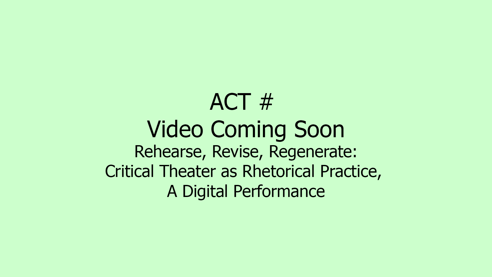

Act 8
Curtain

transcript
Artist Statement
Our final performer is JR, award-winning scholar of queer multimodality, whose afterword, “Curtain,” wraps our collection with a meditation on the performances included, the theories that animate the collection, and future pathways for similar projects, pedagogical, scholarly, and transdisciplinary. [Tech: This Act will be in the genre of the “talk” (video only), with downloadable transcript.]
Works Cited
Velit, Dignissim. “Orci id inceptos augue ullamcorper“ Fringilla laoreet, vol. 31, no. 1, 1969, pp. 383-385
Vivamus, Sodales. “bibendum elit; congue id integer” Suspendisse Metus, vol. 32, no. 2, 1868, pp. 367-393.